Introduction
Aqemu is a free and opensource friendly GUI management for Qemu with the support of KVM, base on QT5 for the graphical interface, written in C++ and multiplateform (Working on Linux, Windows, FreeBSD...). Aqemu provide most of the options of qemu and will make much easier the management of qemu, without compromising the stability and security of your virtual system nor being heavy for the ressources of your machine (memory ram / processor com) .
You can fetch easily aqemu on most of the Linux distribution, which should have aqemu in their package manager or you can grab the latest source available on Github, at this time, 0.9.2
Basic creation of a virtual system
This following tutorial aim to help the new user of aqemu to create a virtual system, it should work for most of the people whishing to run on their personal computer, a virtual system based on qemu/kvm.
Start aqemu by running the command system aqemu in a terminal or eventually, by clicking on his icon in your Window Manager, the first run of aqemu will display the following window
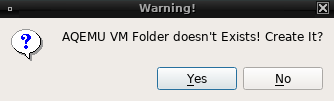
Confirm the creation of the new folder by clicking on "Yes". You will now see the main display, which will be the default display everytime you run aqemu.
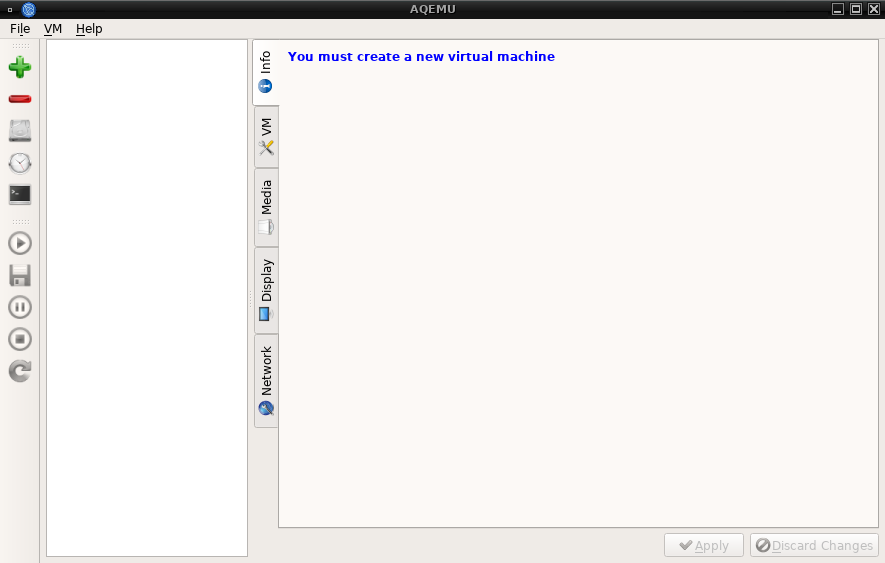
Before to details more on the options, section and settings available, we will run the First start wizard to provide the basic settings. This is available in the menu : File > First start wizard. The default path will be set to your /home/username/.aqemu in most of the case you don't need to change it
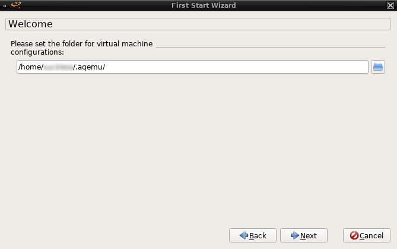
You will need to provide to aqemu, the binary path of qemu, using the automatic search function will work out of the box in most case. If the qemu binary isn't the one required for your machine (arch), you can later one change it in the settings menu.
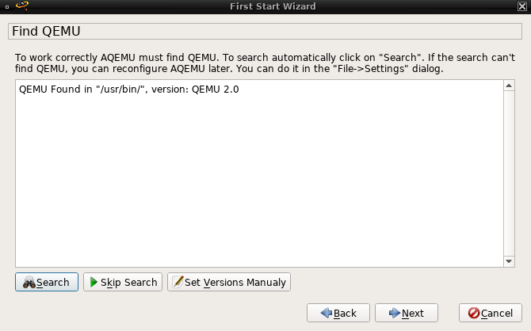
That's all you need to do, click on next to finish the first start wizard.
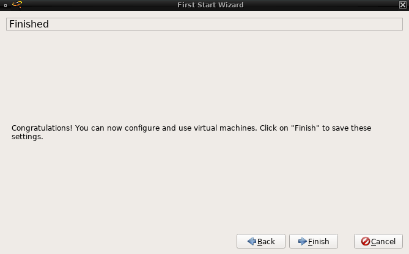
We will now create our first virtual system, to start the process, click on the icon . Select Typical option is the default choice and will work in most of the case
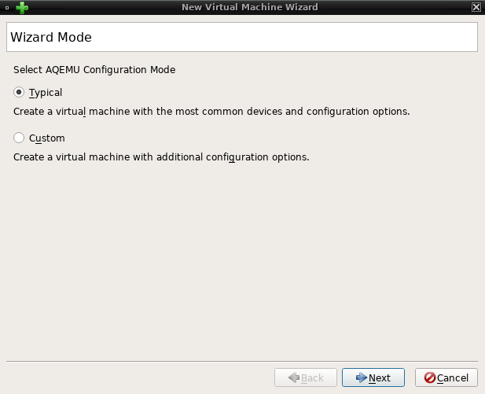
You will need to select the right template according to the operating system that will be installed in this virtual system, for a recent Linux distribution, Linux 2.6 x86_64 is the one you want to select. You can of course install other OS as Windows, Mac'OS system, FreeBSD, just look at the drop list for the right template.
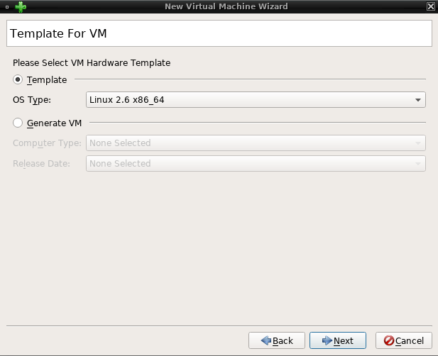
You have to select the accelerator extensions of qemu, the recommanded and no-brainer choice is KVM
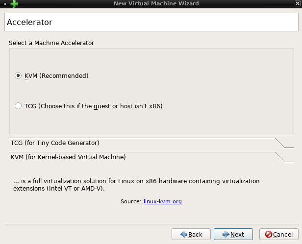
Name as you wish your virtual system, however, using the name of the operating system or Linux distribution will display the logo related to it and offer some default settings.
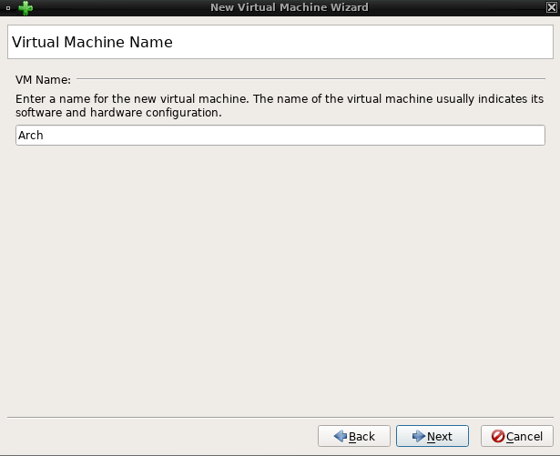
Define the virtual hard drive space you want to allocate for this virtual machine, make sure to have enough free space in your physical hard drive
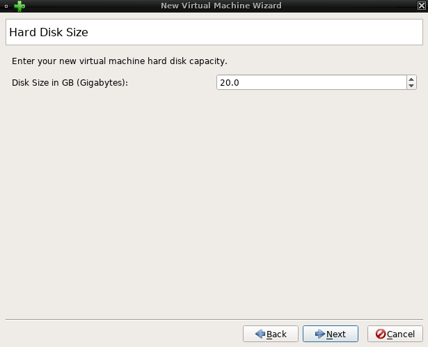
The settings of the network connection is only limited to the "slirp" or User mode in the creation process, multiples other possibility of configuration as TAP, bridged connection, socket... can be defined later one.
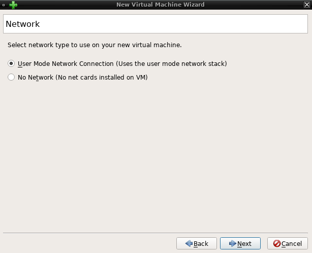
The virtual machine is now created, click to finish to go back in the main display.
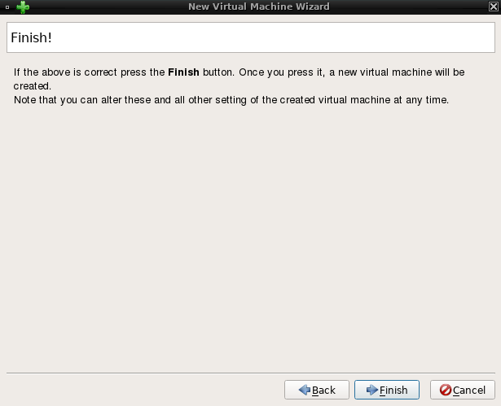
A new entry should now be displayed with the name of your virtual machine newly created, the first tab info will display the general settings of the virtual machine.
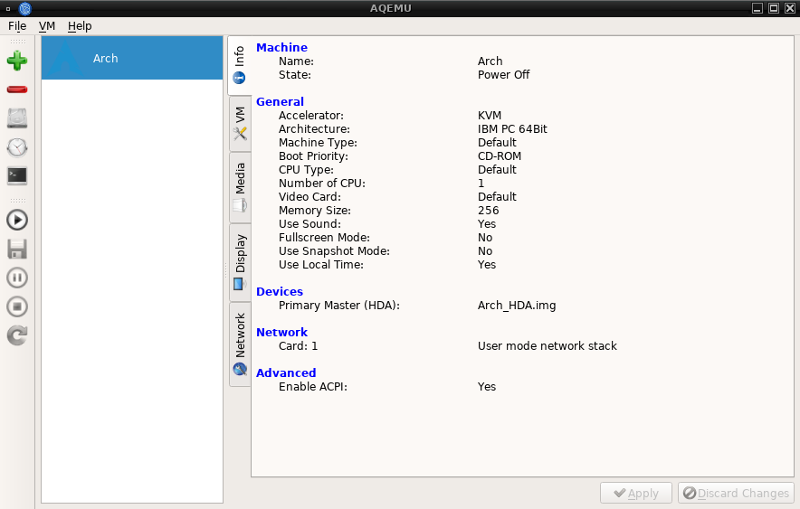
The tab VM contain several options related to the hardware, you can increase the number of CPU's, ram to use in your virtual machine or choice the boot priority, the keyboard maps...
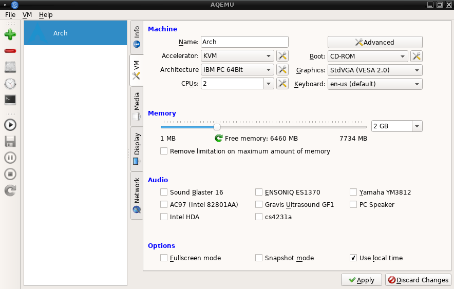The tab media is for the devices, images and other settings related to the boot of the VM. In order to boot in a ISO image, click on the disk icon in "Add devices"
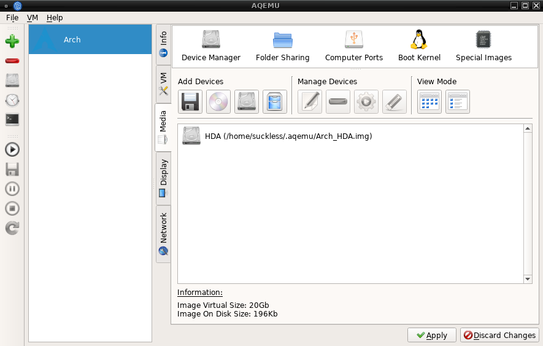
The tab network will offer several options on how to configure the network connection of the virtual system.
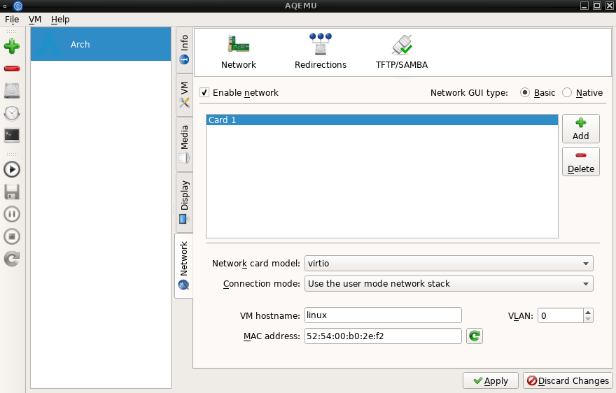
Now we have set the basics options for our virtual system, to start the virtual system, click to
We are now done with the basic configuration of a new virtual system
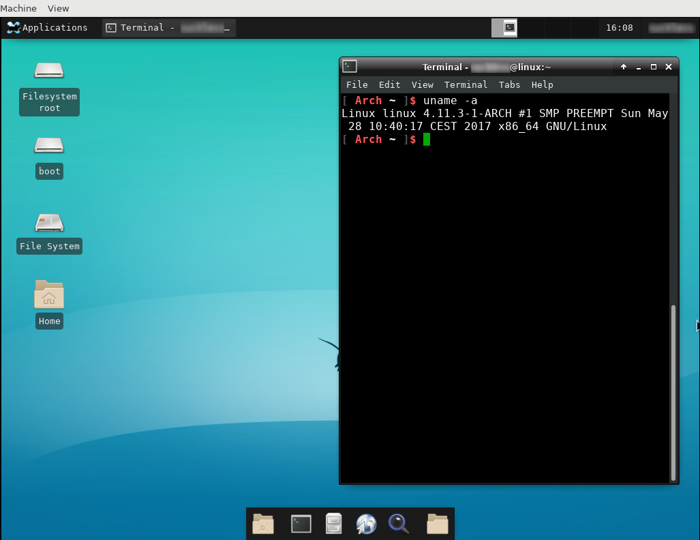